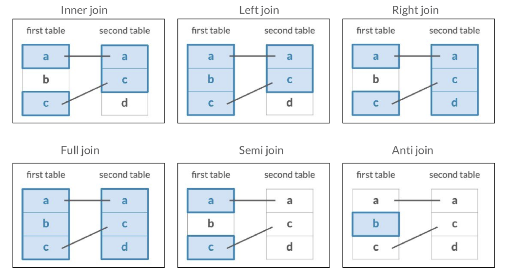
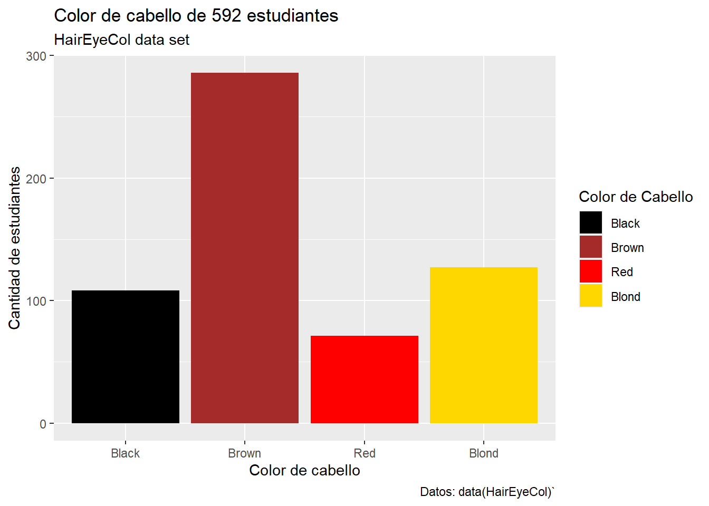
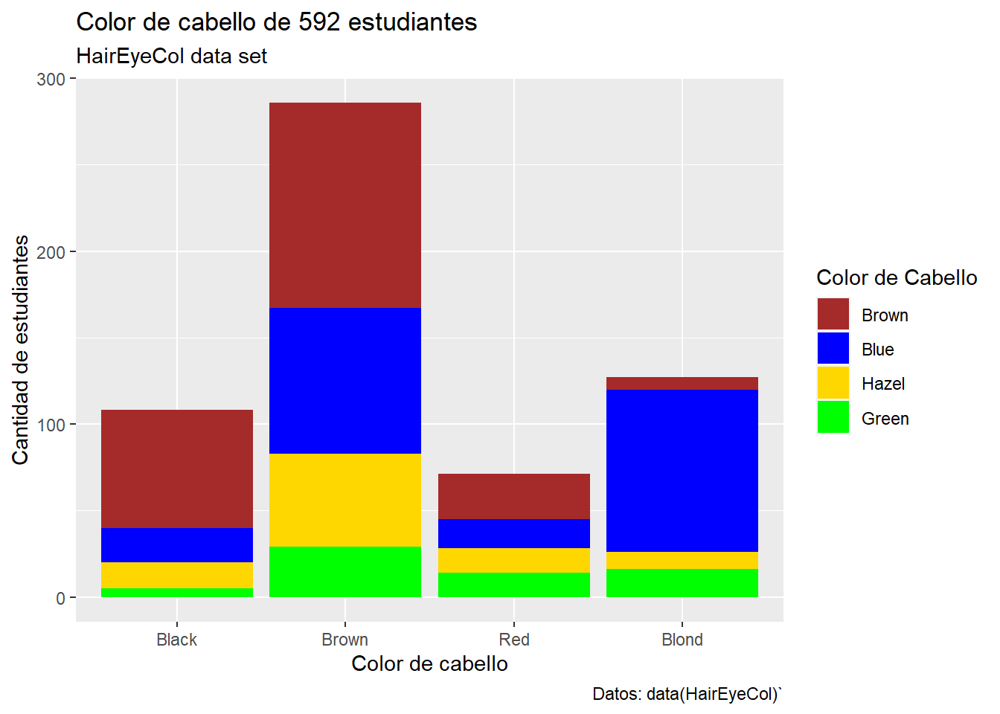
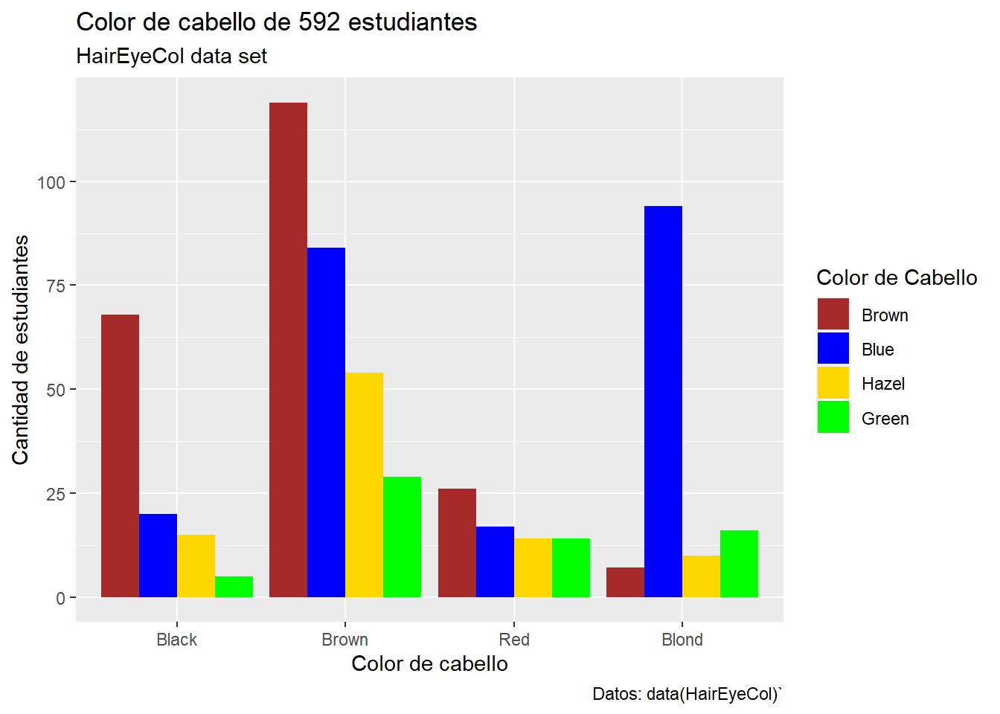

Sección 7 R
7.1 Tipos de datos
Existen dos tipos de datos: atómicos y estructurados. Un dato atómico es aquel que se considera unidad mínima de información, como los números enteros y un dato estructurado es una colección de datos atómicos.
Datos atómicos:
- Lógico: Datos que solo permiten los valores lógicos
TRUEyFALSE. - Numérico: Datos cuyos valores son números reales.
- Complejo: Datos cuyos valores son números complejos.
- Caracter: Datos cuyos valores son cualquier tipo de carácter o cadena.
Datos estructurados:
- Arreglos: colecciones multidimensionales de datos.
- Vectores: Arreglos unidimensionales. Cada uno de sus elementos es del mismo tipo.
- Matrices: Arreglos de dos dimensiones. Todos sus datos son del mismo tipo.
- Dataframes: Son arreglos de dos dimensiones. Los datos de una misma columna son del mismo tipo pero puede variar el tipo de dato en diferente columna.
- Listas: colecciones unidimensionales de datos donde cada elemento puede ser de un tipo diferente.
En R, casi todo lo que se manipula son objetos. Cada objeto tiene sus propias características como tamaño, dimensiones, longitud, tipo y sus propias funciones. Los objetos más comunes en R son:
- Vectores
- Matrices
- Arreglos
- Listas
- Dataframes
7.1.1 Vectores en R
Uno de los objetos más simples pero poderosos de R son los vectores. Los vectores son listas ordenadas de datos. Para crear un vector usamos la asignación vector <- c("dato1", "dato2"). Por ejemplo, mi_vector <- c("hola", "clase", "1"), en este caso el elemento hola es el primer elemento del vector, además todos los elementos son del mismo tipo texto que llamaremos strings.
Podemos calcular la longitud de los vectores en R usando la función length(vector).
## [1] 3Los elementos de los vectores los podemos llamar a través de índices. R siempre indexa desde el número 1 a diferencia de Python que indexa en 0.
## [1] "hola"En R podemos realizar operaciones vectorizadas, es decir se pueden aplicar las operaciones a cada elemento de nuestro vector.
En R la mayoría de las operaciones matemáticas están vectorizadas como la multiplicación, raíces, divisiones, logaritmos o exponenciales.
## [1] 1 2 3## [1] 1 4 9Se pueden combinar también las operaciones vectorizadas e índices.
## [1] 20Las sumas y restas tienen un comportamiento especial.
#Ejercicio: Crea dos vectores de la misma longitud y súmalos.
#¿Qué realiza la suma de vectores?
#¿Qué pasa si sumas vectores de diferente longitud?Otras operaciones vectorizadas son las comparaciones. Los operadores de comparación que podemos usar en R son los siguientes:
==para ver igualdad.!=para ver diferencia.>=para ver si el lado izquierdo es mayor o igual que el derecho.<=para ver si el lado izquierdo es menor o igual que el lado derecho.>para ver si el lado izquierdo es mayor que el lado derecho.<para ver si el lado izquierdo es menor que el lado derecho.
## [1] TRUE## [1] TRUE TRUE FALSESi tenemos dos expresiones lógicas, podemos usar también los siguientes operadores:
&es la conjunción.|es la disyunción.!es la negación.
## [1] TRUE## [1] FALSELas sequencias regulares se pueden formar con el operador :.
## [1] 1 2 3El operador : tiene prioridad sobre otros operadores.
Para formar una sequencia de números reales se usa la función seq, la sintaxis es como sigue: seq(from= 1, to=n, by=k, length.out = NULL ),
## [1] 1 6 11 16 21 26 31 36## [1] 0.0 0.1 0.2 0.3 0.4 0.5 0.6 0.7 0.8 0.9 1.0#Ejercicio: ¿Qué pasa si invertimos el orden de las entradas en la función `seq`?
# seq(by=2, to=10, from=1)La función seq se puede combianar con la creación de vectores.
Otra función que es útil para crear vectores es rep(Z,n), esta función crea un vector de n elementos todos iguales a Z.
## [1] 2 2 2 2 2 2 2 2 2 2## [1] 1.0 2.0 3.0 4.0 4.5 5.0 5.5 6.0 6.5 7.0 7.5 8.0 8.5 9.0 9.5
## [16] 10.0 2.0 2.0 2.0 2.0 2.0 2.0 2.0 2.0 2.0 2.0Las variables se pueden reescribir.
## [1] "2" "2" "2" "2" "2" "2" "2" "2" "2" "2"
## [11] "hola"#Ejercicio: ¿Qué sucedió con el vector y?
#¿De que tipo son sus elementos ahora?
#Realizar la operación y+2.Podemos convertir objetos de un tipo a otro compatible usando las funciones as.(nombre_del_nuevo_tipo_de_objeto). Por ejemplo, nuestro vector y ahora es del tipo caracter, podemos quitar el elemento que es de tipo caracter y convertirlo a un nuevo objeto ahora de tipo numérico.
## [1] "hola"## [1] 1Las funciones elementales como exp, log, sin, etc las podemos aplicar a los vectores siempre y cuando los elementos de nuestro vector estén en el dominimo de la función correspondiente.
## [1] 0.0000000 0.6931472 1.3862944## [1] NaN 0.6931472 1.0986123Otras funciones útiles para vectores son:
max(x)ymin(x): elemento máximo y mínimo del vector \(x\).sum(x)yprod(x): nos devuelve la suma y producto de los elementos del vector \(x\).mean(x)yvar(x): nos devuelve la media y varianza del vector \(x\).sort(x): ordena los elementos del vector \(x\) de manera creciente. Si agregamos el argumentodecreasing=TRUElos ordena de mayor a menor.order(x): nos da los índices correspondientes al ordenamiento de los elementos de \(x\) de menor a mayor.
## [1] 2 4 6 9 10## [1] 2 5 1 3 4## [1] 10 9 6 4 2## [1] 31## [1] 4320## [1] 6.2## [1] 11.2Podemos también seleccionar elementos de un vector y cambiarlos.
## [1] 1 0 3 0 5 0 7 0 9 0## [1] 1 0 2 0 4 0 7 0 9 0En el caso de vectores de caracteres, dos funciones que son útiles son substr() y substring() las cuales nos sirven para extraer cierta cantidad de caracteres de cada entrada del vector. La sintaxis es la siguiente: substr(x,inicio,final) y substring(x,inicio,last=1000000L).
clases <- c("01.Matemáticas", "02.Español", "03.Ciencias",
"04.Física", "05.Geografía")
substring(clases,4,last=1000000L)## [1] "Matemáticas" "Español" "Ciencias" "Física" "Geografía"## [1] "01" "02" "03" "04" "05"La función names() nos ayuda a darle un nombre a las entradas de los vectores, es decir en lugar de índices númericos ahora podemos asignarle un nombre a cada entrada.
## NULL## [1] "Matemáticas" "Español" "Ciencias" "Física" "Geografía"## Matemáticas Español Ciencias Física Geografía
## 10 8 9 7 87.1.2 Arreglos
Un array es una colección de datos, todos del mismo tipo, indexada por varios índices, es decir son objetos multidimensionales en R.
Si \(dim=c(x_1,x_2,x_3...)\), donde \(x_1\), \(x_2\), \(x_3\), etc son enteros, entonces \(x_1\) es el número de filas, \(x_2\) es el número de columnas, \(x_3\) es el número de capas del array.
Una forma de crear arrays es primero crear un vector y después pasarle las dimensiones del arreglo.
## [1] 6 10La función array() resume estas dos instrucciones. Su sintáxis es la siguiente: array(vector, dim = dimensiones).
## [,1] [,2] [,3] [,4] [,5] [,6] [,7] [,8] [,9] [,10]
## [1,] 1 7 13 19 25 31 37 43 49 55
## [2,] 2 8 14 20 26 32 38 44 50 56
## [3,] 3 9 15 21 27 33 39 45 51 57
## [4,] 4 10 16 22 28 34 40 46 52 58
## [5,] 5 11 17 23 29 35 41 47 53 59
## [6,] 6 12 18 24 30 36 42 48 54 60La función class(objeto) nos permite conocer el tipo de objeto con el que estamos trabajando.
## [1] "matrix" "array"## [1] "matrix" "array"#Ejercicio: crear otro array z con el mismo vector x y 3 dimensiones y verifica el tipo de objeto que es z.Las funciones ncol() y nrow() nos permiten conocer cuantas columnas y filas tienen los arrays en cada una de sus capas.
## [1] 10## [1] 6Como la función dim() nos dice las dimensiones de nuestro objeto, las funciones anteriores son equivalentes a lo siguiente:
## NULL## NULL## NULLAl igual que con los vectores, también podemos mandar a llamar las entradas del array indicando dentro de corchetes los índices. Si una dimensión se omite, R lo interpreta como que se piden todos los elementos de esa dimensión.
## [1] 7## [1] 1 7 13 19 25 31 37 43 49 55Un array puede utilizar también otro array de índices, tanto para asignar un vector a una colección irregular de elementos de un array como para extraer una colección irregular de elementos.
## [,1] [,2]
## [1,] 1 1
## [2,] 2 2
## [3,] 3 3
## [4,] 4 4
## [5,] 5 5
## [6,] 6 6## [,1] [,2] [,3] [,4] [,5] [,6] [,7] [,8] [,9] [,10]
## [1,] 0 7 13 19 25 31 37 43 49 55
## [2,] 2 0 14 20 26 32 38 44 50 56
## [3,] 3 9 0 21 27 33 39 45 51 57
## [4,] 4 10 16 0 28 34 40 46 52 58
## [5,] 5 11 17 23 0 35 41 47 53 59
## [6,] 6 12 18 24 30 0 42 48 54 60También podemos modificar manualmente las entradas del array de la siguiente forma.
## [,1] [,2] [,3] [,4] [,5] [,6] [,7] [,8] [,9] [,10]
## [1,] 0 7 13 19 25 31 37 43 49 55
## [2,] 2 0 14 20 26 32 38 44 50 0
## [3,] 3 9 0 21 27 33 39 45 0 57
## [4,] 4 10 16 0 28 34 40 0 52 58
## [5,] 5 11 17 23 0 35 0 47 53 59
## [6,] 6 12 18 24 30 0 42 48 54 60La función which() nos ayuda a recuperar los índices de un array que cumplan alguna condición. Su sintaxis es which(object, arr.ind = FALSE), donde object es el objeto de donde se quiere recuperar los índices y arr.ind se cambia a TRUE si se requieren los índices multidimensionales.
## row col
## [1,] 1 1
## [2,] 2 2
## [3,] 3 3
## [4,] 4 4
## [5,] 5 5
## [6,] 6 6
## [7,] 5 7
## [8,] 4 8
## [9,] 3 9
## [10,] 2 10Está función también se puede aplicar a vectores.
## [1] 0.000000 NaN 1.098612## [1] 2Las funciones y operaciones de los arrays son similares a las de los vectores.
## [1] 0.000000 1.414214 1.732051 2.000000 2.236068 2.449490La función dimnames es similar a la función names() de los vectores. En el caso de arrays, dimnames será una lista que debe contener tantos vectores como dimensiones tenga el array.
mi_array <- array(c(1:12), dim=c(2,2,3),
dimnames = list(c("Gato","Perro"),
c("Esterilizado", "No esterilizado"),
c("Morelia", "Patzcuaro", "Maravatio")))
mi_array## , , Morelia
##
## Esterilizado No esterilizado
## Gato 1 3
## Perro 2 4
##
## , , Patzcuaro
##
## Esterilizado No esterilizado
## Gato 5 7
## Perro 6 8
##
## , , Maravatio
##
## Esterilizado No esterilizado
## Gato 9 11
## Perro 10 12## [1] 3## Morelia Patzcuaro Maravatio
## Esterilizado 2 6 10
## No esterilizado 4 8 12Las funciones rbind() y cbind() sirven para combinar arrays vertical y horizontalmente.
mi_array1 <- array(c(1:6), dim = c(2,3))
mi_array2 <- array(c(7:18), dim = c(4,3))
mi_array3 <- array(c(19:29), dim = c(2,5))## [,1] [,2] [,3]
## [1,] 1 3 5
## [2,] 2 4 6
## [3,] 7 11 15
## [4,] 8 12 16
## [5,] 9 13 17
## [6,] 10 14 18## [,1] [,2] [,3] [,4] [,5] [,6] [,7] [,8]
## [1,] 1 3 5 19 21 23 25 27
## [2,] 2 4 6 20 22 24 26 287.1.3 Matrices
Las matrices son arreglos de dos dimensiones. Entonces, una forma de crear una matriz es usando la función array pero especificando una dimensión de la forma dim=c(x,y).
## [,1] [,2] [,3]
## [1,] 1 4 7
## [2,] 2 5 8
## [3,] 3 6 9Otra forma de crear matrices es usando la función matrix() indicandole el número de columnas y/o filas.
## [,1] [,2] [,3]
## [1,] 1 4 7
## [2,] 2 5 8
## [3,] 3 6 9## [1] "matrix" "array"## [1] "matrix" "array"## [,1] [,2] [,3] [,4] [,5]
## [1,] 0 0 0 0 0
## [2,] 0 0 0 0 0
## [3,] 0 0 0 0 0Otro parámetro que podemos darle a la función matrix es byrow, el cual nos ayuda a llenar la matrix por filas.
## [,1] [,2] [,3]
## [1,] 1 2 3
## [2,] 4 5 6
## [3,] 7 8 9Como las matrices son un tipo particular de los arreglos, las funciones como dimnames o extraer entradas y modificarlas funcionan de la misma forma.
#Ejercicio: Crea una matriz de tamaño 4x4 con números consecutivos ordenados
#por filas y extrae la entrada (4,2).
#cambia los nombres de las filas y columnas por caracteresDisponemos también de varias operaciones con matrices. La operación \(A\ast B\) donde \(A\), \(B\) son matrices en R se refiere a la multiplicación entrada a entrada, no a la multiplicación de matrices. Además esta multiplicación solo se puede realizar si se tiene el mismo número de filas y de columnas.
## [,1] [,2] [,3]
## [1,] 1 8 21
## [2,] 8 25 48
## [3,] 21 48 81La suma y resta de matrices se refiere a sumar o restar dos matrices entrada a entrada, solo se puede realizar con matrices de las mismas dimensiones.
## [,1] [,2] [,3]
## [1,] 2 6 10
## [2,] 6 10 14
## [3,] 10 14 18## [,1] [,2] [,3]
## [1,] 0 2 4
## [2,] -2 0 2
## [3,] -4 -2 0El operador en R para realizar la multiplicación usual de matrices es %*%.
## [,1] [,2] [,3]
## [1,] 66 78 90
## [2,] 78 93 108
## [3,] 90 108 126El operador t() se usa para calcular la transpuesta de una matriz.
## [,1] [,2] [,3]
## [1,] 1 2 3
## [2,] 4 5 6
## [3,] 7 8 97.1.3.1 Otras operaciones con Matrices
- Crossproduct: es equivalente a
t(A)%*% BoA %*% t(B). Las funciones que se usan soncrossprodytcrossprodrespectivamente.
## [,1] [,2]
## [1,] 125 60
## [2,] 220 96## [,1] [,2]
## [1,] 74 198
## [2,] 61 147- Producto exterior: El operador que se usa es
%o%o la funciónouter().
## , , 1, 1
##
## [,1] [,2]
## [1,] 50 40
## [2,] 25 60
##
## , , 2, 1
##
## [,1] [,2]
## [1,] 150 120
## [2,] 75 180
##
## , , 1, 2
##
## [,1] [,2]
## [1,] 30 24
## [2,] 15 36
##
## , , 2, 2
##
## [,1] [,2]
## [1,] 60 48
## [2,] 30 72## , , 1, 1
##
## [,1] [,2]
## [1,] 50 40
## [2,] 25 60
##
## , , 2, 1
##
## [,1] [,2]
## [1,] 150 120
## [2,] 75 180
##
## , , 1, 2
##
## [,1] [,2]
## [1,] 30 24
## [2,] 15 36
##
## , , 2, 2
##
## [,1] [,2]
## [1,] 60 48
## [2,] 30 72- Producto Kronecker: si \(A\) y \(B\) son dos matrices, el producto de Kronecker se denota por $A B $ y en R el operador correspondiente es
%x%.
## [,1] [,2] [,3] [,4]
## [1,] 50 30 40 24
## [2,] 150 60 120 48
## [3,] 25 15 60 36
## [4,] 75 30 180 72- Potencia de una matriz: existen dos formas de realizarla. La primera es con el operador
%^%del paqueteexpm. La segunda con la funciónmatrix.powerdel paquetematrixcalc.
## Loading required package: Matrix##
## Attaching package: 'expm'## The following object is masked from 'package:Matrix':
##
## expm## [,1] [,2]
## [1,] 140 176
## [2,] 110 184## [,1] [,2]
## [1,] 140 176
## [2,] 110 184- Determinante: la función de R que calcula el determinante de una matriz es
det().
## [1] 80## [1] -15- Inversa: para calcular la inversa de una matriz se usa la función
solve().
## [,1] [,2]
## [1,] 0.1500 -0.100
## [2,] -0.0625 0.125La función solve también nos ayuda a resolver un sistema de ecuaciones, por ejemplo si queremos resolver el sistema de ecuaciones \(AX = B\) lo podemos hacer de la siguiente manera.
## [,1] [,2]
## [1,] -0.7500 -0.1500
## [2,] 1.5625 0.5625- Rango: no existe una función base de R para calcular el rango pero se puede usar la función
qr()que nos calcula la descomposición QR de una matriz y regresa también como argumento el rango de la matriz o la funciónrankMatrixdel paqueteMatrix.
## $qr
## [,1] [,2]
## [1,] -11.1803399 -12.521981
## [2,] 0.4472136 7.155418
##
## $rank
## [1] 2
##
## $qraux
## [1] 1.894427 7.155418
##
## $pivot
## [1] 1 2
##
## attr(,"class")
## [1] "qr"Para solo pedir a R el rango de la matriz se hace uso del operador $ de la siguiente manera.
## [1] 2## [1] 2- Matriz diagonal: La función
diag()nos ayuda a extraer o reemplazar la diagonal de una matriz.
## [1] 10 12Si el argumento que se le da a la función diag es un vector, esto crea una matriz diagonal con las entradas del vector en la diagonal.
## [,1] [,2] [,3]
## [1,] 1 0 0
## [2,] 0 2 0
## [3,] 0 0 3Además, la función diag también nos permite crear una matriz identidad especificando solamente la dimensión de la matriz deseada.
## [,1] [,2] [,3]
## [1,] 1 0 0
## [2,] 0 1 0
## [3,] 0 0 1- Eigenvalores y eigenvectores: la función de R que nos calcula tanto los eigenvalores como los eigenvectores es
eigen().
## eigen() decomposition
## $values
## [1] 17.403124 4.596876
##
## $vectors
## [,1] [,2]
## [1,] -0.7339565 -0.8286986
## [2,] -0.6791964 0.55969527.1.4 Dataframes
Los dataframes o tablas de catos son un arreglo rectangular de datos y son los objetos más usados en R al momento de realizar análisis de datos. En los vectores, arreglos y matrices, todas las entradas tienen que ser el mismo tipo de dato pero en los dataframes no es necesario pero cada columna si debe de tener el mismo tipo de datos.
Para crear un dataframe usamos la función data.frame(), a diferencia de los arrays, uno debe especificar cada columna con su nombre. Los nombres de las columnas no deben de contener espacios.
mi_df <- data.frame(ciudad = c("Morelia", "Veracruz", "Merida"),
Temperatura = c(27, 26, 32),
Playa = c(FALSE, TRUE, FALSE))
mi_df## ciudad Temperatura Playa
## 1 Morelia 27 FALSE
## 2 Veracruz 26 TRUE
## 3 Merida 32 FALSETodas las columnas de un dataframe deben de tener la misma longitud. La función str()nos permite ver como están estructurados nuestros datos, no solamente un dataframe.
## 'data.frame': 3 obs. of 3 variables:
## $ ciudad : chr "Morelia" "Veracruz" "Merida"
## $ Temperatura: num 27 26 32
## $ Playa : logi FALSE TRUE FALSEEn los dataframes, las filas también pueden tener un nombre, para darles nombre usamos la función row.names().
## ciudad Temperatura Playa
## A Morelia 27 FALSE
## B Veracruz 26 TRUE
## C Merida 32 FALSEEl comando row.names() se puede dar como atributo cuando se construye el dataframe.
mi_df <- data.frame(ciudad = c("Morelia", "Veracruz", "Merida"),
Temperatura = c(27, 26, 32),
Playa = c(FALSE, TRUE, FALSE),
row.names = c("A", "B", "C"))
mi_df## ciudad Temperatura Playa
## A Morelia 27 FALSE
## B Veracruz 26 TRUE
## C Merida 32 FALSEPara acceder a los datos del dataframe es similar a la forma de los arreglos o vectores y además podemos mandar a llamar solo una columna usando el operador $.
## [1] "Morelia" "Veracruz" "Merida"## [1] 27 26 32## ciudad Temperatura Playa
## A Morelia 27 FALSE
## B Veracruz 26 TRUE## ciudad Temperatura Playa
## A Morelia 27 FALSE
## B Veracruz 33 TRUE
## C Merida 32 FALSEUna forma de modificar el nombre de una columna de nuestro dataframe es con la función names.
## Ciudad Temperatura Playa
## A Morelia 27 FALSE
## B Veracruz 33 TRUE
## C Merida 32 FALSELas funciones rbind cbind que usamos con los arreglos también se pueden usar para expandir los dataframes.
## c..Monterrey....Cancún.. c.25..28. c.FALSE..TRUE.
## 1 Monterrey 25 FALSE
## 2 Cancún 28 TRUEAl no tener los mismos nombres de columnas, no se puede usar rbind para combinarlos. Esto se puede solucionar cambiando los nombres del segundo dataframe.
## [1] "c..Monterrey....Cancún.." "c.25..28."
## [3] "c.FALSE..TRUE."## [1] "Ciudad" "Temperatura" "Playa"## Ciudad Temperatura Playa
## A Morelia 27 FALSE
## B Veracruz 33 TRUE
## C Merida 32 FALSE
## 1 Monterrey 25 FALSE
## 2 Cancún 28 TRUECon cbind no tenemos este problema ya que lo que hacemos es agregar columnas.
## Ciudad Temperatura Playa Habitantes
## A Morelia 27 FALSE 849053
## B Veracruz 33 TRUE 8063000
## C Merida 32 FALSE 892363Otra forma de agregar una columna es con el operador $.
## Ciudad Temperatura Playa Habitantes
## A Morelia 27 FALSE 849053
## B Veracruz 33 TRUE 8063000
## C Merida 32 FALSE 892363El operador $ también nos sirve para eliminar una columna.
## Ciudad Temperatura Playa
## A Morelia 27 FALSE
## B Veracruz 33 TRUE
## C Merida 32 FALSEPara guardar un dataframe usamos la función write.csv.
write.csv(mi_df, file = "D:/Users/hayde/Documents/R_sites/Seminario_Estadistica/data/municipios.csv", row.names = FALSE)Para leer el csv que acabamos de guardar usamos la función reaf.csv.
municipios <- read.csv(file = "D:/Users/hayde/Documents/R_sites/Seminario_Estadistica/data/municipios.csv", stringsAsFactors = TRUE)
municipios## Ciudad Temperatura Playa
## 1 Morelia 27 FALSE
## 2 Veracruz 33 TRUE
## 3 Merida 32 FALSE## NULL7.1.5 Listas
Las listas son objetos ordenados de una solo longitud y sus elementos pueden ser de distinto tipo, incluso otras listas. La función para crear listas es list().
## [[1]]
## [1] 1
##
## [[2]]
## [1] "a"
##
## [[3]]
## [1] TRUE## [1] "list"## [1] "list"Para acceder a los elementos de una lista es similar a la de los vectores e incluso se le puede dar nombres a las entradas o modificarlos como con los vectores usando la función names().
mi_lista2 <- list(mi_vector = c(1,2,3,4),
mi_array = array(c(1:9),dim=c(3,3)),
mi_booleano = TRUE)
mi_lista2## $mi_vector
## [1] 1 2 3 4
##
## $mi_array
## [,1] [,2] [,3]
## [1,] 1 4 7
## [2,] 2 5 8
## [3,] 3 6 9
##
## $mi_booleano
## [1] TRUE## [1] "mi_vector" "mi_array" "mi_booleano"## [1] "mi_vector" "mi_array" "mi_logico"No es necesario que todas las entradas de la lista tengan los mismos nombres.
## [1] "" "letra" ""La función length() nos devuelve la dimensión de una lista.
## [1] 3## [1] 3Con la función srt() podemos conocer la estructura de la lista.
## List of 3
## $ mi_vector: num [1:4] 1 2 3 4
## $ mi_array : int [1:3, 1:3] 1 2 3 4 5 6 7 8 9
## $ mi_logico: logi TRUEA diferencia de los vectores y arrays, en las listas contamos con dos niveles de indexado. Con dobles corchetes accedemos a los elementos de la lista, es decir [[n]] nos devuelve el elemento \(n\) de la lista y en caso de que se trate de un array, vector u otro objeto para acceder a los elementos de este objeto usamos otros corchetes, es decir objeto[[n]][p].
# Para acceder a la primera fila de la segunda entrada de la lista, la cual es
# un array usamos:
mi_lista2[[2]][1,]## [1] 1 4 7## [1] "matrix" "array"## $mi_array
## [,1] [,2] [,3]
## [1,] 1 4 7
## [2,] 2 5 8
## [3,] 3 6 9## [1] "list"Otra forma de acceder a los objetos de la lista es usando sus nombres o con el operador $ como en los dataframes.
## $mi_vector
## [1] 1 2 3 4## [1] 1 2 3 4## [,1] [,2] [,3]
## [1,] 1 4 7
## [2,] 2 5 8
## [3,] 3 6 9Para añadir elementos a una lista debemos ser cuidadosos con los índices que usamos, si usamos [[k]] estaríamos añadiendo un objeto en la posición \(k\) de la lista y si usamos [[k]][j] estaríamos añadiendo el elemento \(j\) al objeto \(k\) de la lista.
## [[1]]
## [1] 1
##
## [[2]]
## [1] "a"
##
## [[3]]
## [1] TRUE
##
## [[4]]
## [1] "a" "b" "c"## [[1]]
## [1] 1 2
##
## [[2]]
## [1] "a"
##
## [[3]]
## [1] TRUE
##
## [[4]]
## [1] "a" "b" "c"Para eliminar elementos de una lista podemos asignar NULL a la posición de la lista, sin embargo esta asignación no hace diferencia de si usamos [[]], [] o $.
## [[1]]
## [1] 1 2 3 4
##
## [[2]]
## [,1] [,2]
## [1,] 1 3
## [2,] 2 4
##
## [[3]]
## [1] TRUE FALSE## [[1]]
## [,1] [,2]
## [1,] 1 3
## [2,] 2 4
##
## [[2]]
## [1] TRUE FALSEmi_lista4 <- list(c(1,2,3,4),array(c(1:4),dim = c(2,2)), c(TRUE,FALSE))
mi_lista4[[1]] <- NULL
mi_lista4## [[1]]
## [,1] [,2]
## [1,] 1 3
## [2,] 2 4
##
## [[2]]
## [1] TRUE FALSEmi_lista4 <- list(mi_vec = c(1,2,3,4),mi_array = array(c(1:4),dim = c(2,2)), mi_log = c(TRUE,FALSE))
mi_lista4[["mi_array"]] <- NULL
mi_lista4## $mi_vec
## [1] 1 2 3 4
##
## $mi_log
## [1] TRUE FALSEmi_lista4 <- list(mi_vec = c(1,2,3,4),mi_array = array(c(1:4),dim = c(2,2)), mi_log = c(TRUE,FALSE))
mi_lista4["mi_array"] <- NULL
mi_lista4## $mi_vec
## [1] 1 2 3 4
##
## $mi_log
## [1] TRUE FALSEmi_lista4 <- list(mi_vec = c(1,2,3,4),mi_array = array(c(1:4),dim = c(2,2)), mi_log = c(TRUE,FALSE))
mi_lista4$mi_array <- NULL
mi_lista4## $mi_vec
## [1] 1 2 3 4
##
## $mi_log
## [1] TRUE FALSEmi_lista4 <- list(mi_vec = c(1,2,3,4),mi_array = array(c(1:4),dim = c(2,2)), mi_log = c(TRUE,FALSE))
mi_lista4[c(1,3)] <- NULL
mi_lista4## $mi_array
## [,1] [,2]
## [1,] 1 3
## [2,] 2 4mi_lista4 <- list(mi_vec = c(1,2,3,4),mi_array = array(c(1:4),dim = c(2,2)), mi_log = c(TRUE,FALSE))
mi_lista4[-c(1,3)] ## $mi_array
## [,1] [,2]
## [1,] 1 3
## [2,] 2 4Para combinar dos listas usamos el operador que se usa para concatenar vectores c().
## [[1]]
## [1] 1 2 3
##
## [[2]]
## [1] "a" "b"
##
## [[3]]
## [,1] [,2]
## [1,] 1 3
## [2,] 2 4
##
## [[4]]
## [1] TRUE FALSE## [1] "list"7.1.6 Factores
Los factores nos ayudan a representar los niveles de los datos, pueden parecer caracteres pero en realidad son niveles. Por ejemplo, se pueden usar para representar el género, continentes, razas de algún animal, etc.
## chr [1:4] "Siames" "Calico" "Angora" "Carey"## [1] "factor"## Factor w/ 4 levels "Angora","Calico",..: 4 2 1 3## [1] "character"## [1] "integer"Para conocer los niveles de nuestro objeto usamos la función levels() y cuantos niveles tenemos nlevels().
## [1] "Angora" "Calico" "Carey" "Siames"## [1] 4Los factores se ordenan alfabéticamente.
## [1] alto medio bajo
## Levels: alto bajo medio## [1] alto medio bajo
## Levels: bajo < medio < altoniveles2 <- factor(niveles, order = TRUE, levels = c("bajo", "medio", "alto"))
niveles2; as.numeric(niveles2)## [1] alto medio bajo
## Levels: bajo < medio < alto## [1] 3 2 17.1.7 Atributos de objetos
Los atributos de los objetos los podemos obtener de la siguiente forma:
- Modo: Cualquier tipo de entidad que maneja R, se usa la función mode(objeto).
- Tipo: Tipo de dato: entero, caracter, double, etc. Se usa la función typeof(objeto).
- Nombres: etiquetas de los elementos individuales de un vector o lista. Se usa la función names(objeto).
- Dimensiones: Dimensión de los arreglos. Se usa la función dim(objeto). Esta función devuelve dos valores: el primero es el número de filas, el segundo el de columnas.
- Dimnames: Nombres de las dimensiones de los arrays. Se usa la función dimnames(objeto).
- Clase: Vector alfanumérico con la lista de las clases del objeto. Se usa la función class(objeto).
- Longitud: Longitud de cualquier estructura. Se usa la función length(objeto).
## [1] "character"El operador ls() nos permite listar todas las variables y funciones de nuestro ambiente global, sin embargo los objetos que comienzan con . no son listados, para listar estas variables se utiliza ls(all.names = TRUE).
## [1] "A" "B" "categorias_gatos"
## [4] "clases" "gatos" "indices"
## [7] "info_extra" "lista1" "lista2"
## [10] "lista3" "Logaritmo" "matriz_ceros"
## [13] "matriz1" "matriz2" "matriz3"
## [16] "mi_array" "mi_array1" "mi_array2"
## [19] "mi_array3" "mi_df" "mi_lista"
## [22] "mi_lista2" "mi_lista3" "mi_lista4"
## [25] "mi_vector" "mi_vector2" "mis_calificaciones"
## [28] "municipios" "niveles" "niveles2"
## [31] "nuevo_df" "raiz_x" "w"
## [34] "workingDir" "x" "y"
## [37] "z"Para borrar un objeto usamos rm(objeto).
En el caso de querer eliminar todos los objetos de nuestro ambiente, usamos rm(list = ls() ). Es importante señalar que se debe usar el operador = para asignar al objeto list todos los objetos que estén en ls() en lugar del operador <-.
7.1.8 Ejercicios
- Crea una base de datos de los asistentes a la clase y dale el nombre
estudiantes, almacena datos como nombre, edad, lugar de origen, grado, o algunos otros de tal forma que la base de datos tenga variables de todos los tipos, numéricos, factores, lógicos y caracteres.
- Usando la base de datos estudiantes, extrae las columnas de los estudiantes con edad mayor al promedio de las edades y aquellos estudiantes del mismo grado.
- Extrae las ciudades o regiones de aquellos estudiantes mayores a la edad promedio.
- Ordena la base de datos usando alguna variable cuantitativa.
- Crea una lisa con los elementos de la base de datos estudiantes y da un nombre a las entradas de la lista y accede a tu nombre y edad como subelementos de la lista.
Usando la ayuda de R, busca como se pueden redondear los números \(2.5\), \(4.8\), \(9,2\). ¿Cuáles fueron los resultados de redondear? Ahora, trata de redondear a dos decimales los siguientes números: \(4.765\), \(3.231\), \(9.769\).
Crea una vector con las letras
A M A B M M B A B B, dondeAsignifica Alto,Bbajo yMmedio. Convierte las entradas del vector a factores y especifica queA > M > B.Carga la base de datos
CO2del paquetedatasetsusandodata("CO2"). Explora la base de datos y revisa que tipo de datos tiene cada columna.
- Calcula el promedio de las tasas de absorción de CO2 en Quebec (
uptake). - Obtén el máximo y mínimo de las concentraciones de CO2 para las plantas
chilled. - Para las plantas
Ms2, ¿cuántos niveles de concentración ambiental de CO2 se midieron?. - Para plantas
non-chilled, cuando la concentración es 500, ¿cuáles son los niveles de absorciónuptake?
7.2 Estructuras de control
Las estructuras de control se refieren a como hacemos que un algoritmo tome alguna decisión o camino dependiendo de las condiciones que se le especifiquen y realice ciclos o repeticiones.
Vamos a ver dos tipos de estructuras de control. La primera el condicional if donde ciertas instrucciones son ejecutadas dada la veracidad de la condición que actúa como un parámetro de control. La segunda se trata de los ciclos, los cuales repiten ciertas instrucciones varias veces, de este tipo de estructuras de control tenemos el ciclo for que se usa cuando las repeticiones se realizan un número fijo de veces (el parámetro de control) y el ciclo while cuando las iteraciones no se especifican a priori pero continua evaluándose mientras alguna condición no se alcance.
7.2.1 Condicional if
La palabra clave if siempre evalúa una expresión lógica y cuando dicha expresión de por resultado el valor TRUE, se ejecutará el código indicado a continuación del if entre llaves. En caso de que el resultado sea FALSE, ignorará lo que se encuentre inmediatamente del if entre llaves y continuará con la siguiente instrucción.
# if
if (condicion es TRUE) {
instrucción
}
# if ... else
if (condicion es TRUE) {
instrucción
} else {
instruccion alternativa
}
# if ... else if ... else
if (condicion es TRUE) {
instrucción
} else if (condicion es TRUE) {
instruccion alternativa
} else {
ultima condicion
}Por ejemplo, vamos a crear una variable y asignarle un valor, después vamos imprimir en pantalla si la variable tiene cierto valor.
## [1] 8Como \(x\) no es más grande que 10, entonces no nos devuelve ningún mensaje.
## [1] " x es menor que 10"## [1] 8Para verificar varias condiciones podemos usar else if
x <- 8
if (x >= 10) {
print(" x es más grande o igual a 10")
} else if (x > 5) {
print("x es mayor que 5 pero menor que 10")
} else {
print(" x es menor que 10")
}## [1] "x es mayor que 5 pero menor que 10"## [1] 8edad <- readline(prompt = "Escribe tu edad:")
if (edad >= 30 ) {
print("Tal vez tenemos la misma edad")
} else{
print("Soy mayor que tu")
}# Ejercicio: crea un ciclo if que pregunte un número y que devuelva el mensaje de si el número es positivo, negativo o cero.También se pueden crear ciclos anidados.
dato_texto = readline(prompt="Ingresa un número: ")
dato <- as.numeric(dato_texto)
if(is.na(dato) == FALSE){
print('Es un número.')
if(dato < 0){
print('Es negativo.')
} else if(dato > 0){
print('Es positivo.')
} else{
print('Es cero')
}
} else{
print('No es un número.')
}Existe una función adicional llamada ifelse(), la estructura de esta es ifelse(condicion is TRUE, instruccion1, instruccion alternativa).
## [1] "x es un número negativo"Tres funciones que son de gran ayuda para verificar condiciones son all(), any(), which().
## [1] FALSE## [1] TRUE## [1] 1 77.2.2 Ciclo for
La función for() realiza un bloque de códigos tantas veces como se indique un argumento. Los objetos de tipo iterable, es decir los que se pueden recorrer son los vectores y las listas. La sintaxis de un for es la siguiente:
El vector de índices se define antes de las instrucciones entre {} o dentro de los (). Por ejemplo,
## [1] 1
## [1] 2
## [1] 3
## [1] 4
## [1] 5
## [1] 6
## [1] 7
## [1] 8
## [1] 9
## [1] 10Al terminar el ciclo for(), el valor de la varible i toma el último valor de la lista de índices.
## [1] 10Vamos a crear un vector vacío y que después se rellene con la suma acumulativa de los enteros consecutivos en el vector.
## NULL## [1] 1 3 6 10 15 21 28 36 45 55## [1] 1
## [1] 3
## [1] 5
## [1] 7
## [1] 9
## [1] 11
## [1] 13
## [1] 15
## [1] 17
## [1] 19También se pueden usar valores lógicos como sigue.
## [1] TRUE
## [1] FALSE
## [1] TRUELas estructuras de control se pueden combinar. Por ejemplo, vamos a crear un condicional con un for y un if que nos regrese el mensaje de si un estudiante alcanzó al menos 5 puntos en un examen.
puntos <- c(10,4, 6,2,4, 7, 5, 9, 8, 0)
for (puntaje in puntos){
if (puntaje < 5 ){
print("Reprobó")
} else {
print("Aprobó")
}
}## [1] "Aprobó"
## [1] "Reprobó"
## [1] "Aprobó"
## [1] "Reprobó"
## [1] "Reprobó"
## [1] "Aprobó"
## [1] "Aprobó"
## [1] "Aprobó"
## [1] "Aprobó"
## [1] "Reprobó"7.2.3 Ciclo while
El ciclo while() se usa para realizar un bloque de código recursivamente mientras no se alcance cierta condición. Si el resultado de la evaluación es FALSE entonces no se realizará la instrucción. La estructura del condicional while() es como sigue.
El siguiente ejemplo imprime en pantalla un número mientras este no sea mayor a 10.
## [1] "0" "es menor a 10"
## [1] "1" "es menor a 10"
## [1] "2" "es menor a 10"
## [1] "3" "es menor a 10"
## [1] "4" "es menor a 10"
## [1] "5" "es menor a 10"
## [1] "6" "es menor a 10"
## [1] "7" "es menor a 10"
## [1] "8" "es menor a 10"
## [1] "9" "es menor a 10"Igual que con el condicional for(), i es una variable que al finalizar el ciclo tiene el último valor con el que fue evaluada, en este caso:
## [1] 10Se debe de tener cuidado de modificar el valor de la variable a iterar para no terminar con un condicional infinito.
El siguiente ciclo nos devuelve el primer número cuyo cuadrado exceda el número dado.
## [1] 45Los while() se pueden emplear con caracteres.
frase <- "Hola a todos"
n=1
lista <- list()
while (n <= nchar(frase)) {
lista[[n]] = list(recorridos = substr(frase,1, n), num_caracteres = n)
n = n + 1
}
lista## [[1]]
## [[1]]$recorridos
## [1] "H"
##
## [[1]]$num_caracteres
## [1] 1
##
##
## [[2]]
## [[2]]$recorridos
## [1] "Ho"
##
## [[2]]$num_caracteres
## [1] 2
##
##
## [[3]]
## [[3]]$recorridos
## [1] "Hol"
##
## [[3]]$num_caracteres
## [1] 3
##
##
## [[4]]
## [[4]]$recorridos
## [1] "Hola"
##
## [[4]]$num_caracteres
## [1] 4
##
##
## [[5]]
## [[5]]$recorridos
## [1] "Hola "
##
## [[5]]$num_caracteres
## [1] 5
##
##
## [[6]]
## [[6]]$recorridos
## [1] "Hola a"
##
## [[6]]$num_caracteres
## [1] 6
##
##
## [[7]]
## [[7]]$recorridos
## [1] "Hola a "
##
## [[7]]$num_caracteres
## [1] 7
##
##
## [[8]]
## [[8]]$recorridos
## [1] "Hola a t"
##
## [[8]]$num_caracteres
## [1] 8
##
##
## [[9]]
## [[9]]$recorridos
## [1] "Hola a to"
##
## [[9]]$num_caracteres
## [1] 9
##
##
## [[10]]
## [[10]]$recorridos
## [1] "Hola a tod"
##
## [[10]]$num_caracteres
## [1] 10
##
##
## [[11]]
## [[11]]$recorridos
## [1] "Hola a todo"
##
## [[11]]$num_caracteres
## [1] 11
##
##
## [[12]]
## [[12]]$recorridos
## [1] "Hola a todos"
##
## [[12]]$num_caracteres
## [1] 127.3 Funciones y Operadores
En R al igual que en otros lenguajes de programación podemos crear nuestras propias funciones.
La estructura de una función en R es la siguiente:
Por ejemplo, supongamos que necesitamos calcular repetidamente el valor de la función \(f(x)=x^2/(x-1)\).
Entonces para evaluarla en algún número solo usamos la intrucción:
## [1] 6.25Supongamos que dado un vector, queremos calcular la suma de sus entradas, restarle el elemento máximo y el mínimo.
mi_funcion <- function(vec){
suma <- sum(vec)
maximo <- max(vec)
minimo <- min(vec)
return(suma - maximo - minimo)
}Aplicamos la función a un vector:
## [1] 17En las funciones podemos indicar la operación a realizar como en el ejemplo uno o escribir la palabra reservada return para que nos regrese ese resultado.
Las funciones pueden recibir más de un parámetro como en el caso de funciones matemáticas en dos o más variables. Por ejemplo, supongamos que queremos crear la función \(g(x,y)= x^2 - y^2\).
## [1] 3A las funciones también podemos pasarle parámetros opcionales como en otras funciones que ya hemos utilizado como matrix. Por ejemplo, supongamos que queremos crear una función que nos cree vectores o matrices dependiendo de los parámetros que le proporcionemos.
Por ejemplo, le podemos dar solo el parámetro a:
## [1] 1 2 3 4Y es lo mismo a indicar el parámetro a y flag=FALSE:
## [1] 1 2 3 4En cambio, si cambiamos el parámetro de flag=TRUE:
## [,1] [,2]
## [1,] 1 5
## [2,] 2 6
## [3,] 3 7
## [4,] 4 8Si no queremos proporcionar el parámetro b pero si queremos una matriz debemos especificar que TRUE es el valor de flag:
## [,1] [,2] [,3] [,4]
## [1,] 1 3 5 7
## [2,] 2 4 6 8Una función en R solo puede regresar un objeto pero si queremos que nos regrese más de un objeto podemos usar listas para almacenar los resultados.
## $len
## [1] 10
##
## $total
## [1] 55
##
## $promedio
## [1] 5.5## [1] "len" "total" "promedio"## [1] 10En el caso de que queramos obtener algún mensaje de error cuando el argumento de nuestra función no sea lo esperado podemos usar la función stop.
fxx <- function(x){
if (!is.numeric(x)){
stop("x debe ser un número")
}
result <- (x*x)/(x-1)
return(result)
}Otro argumento que funciona de forma similar a stop es stopifnot(), este se usa en el caso de que no se quieran verificar varias condiciones.
7.3.1 Ejercicios
Crea un vector que contenga los 7 días de la semana. Haz una función que dado un número del 1 al 7, imprima el día de la semana correspondiente.
Crea una función que dado un número del 1 al 12 imprima el nombre del mes correspondiente.
Crea una función que calcule las raices de un polinomio cuadrático.
Considera la función
Aplícala a: g(1 : 2, 2 : 3) y g(1 : 4, 1 : 5). ¿Qué está realizando la función al aplicarla a datos?
- Escribe una función que tome cualquier dataframe con entradas numéricas y nos devuelva el mismo dataframe con un renglón con el promedio de cada columna.
7.4 Scripts
Un script es una colección de varias instrucciones de R escritas en un archivo. La extensión de los script en R es .r o .R. En los scripts podemos colocar comentarios, paquetes, instrucciones de tal forma que pueda ser ejecutado sin problemas. Para ejecutar un script usamos la instrucción source("nombre.R"), en caso de no estar el script en nuestro directorio de trabajo debemos fijarlo o poner la ruta completa al script.
Por ejemplo, vamos a crear un script llamado mi_script.R con dos variables y que calcule su producto. Para ejecutar el script vamos a escribir en la consola source("mi_script.R").
Nota: Para desinstalar algún paquete o instalar un paquete indicando que se instalen todas las dependencias se realizar lo siguiente:
7.5 Manipulación de bases de datos
El manejo de bases de datos es uno de los puntos clave o principales al momento de realizar un análisis de datos. En ocasiones, lo más díficil es tener una base de datos que sea posible manipular. El primer paso es tener una base de datos, después importarla a R y manipularla de tal forma que podamos trabajar con ella. En la primera parte del curso, comenzamos a trabajar con objetos data.frame, otro tipo de objetos son los data.table que tienen mejor poder de procesamiento y los tibbles que incorporan otras características a los datos y que pueden ser de ayuda.
Para importar un archivo .csv recordemos que usamos read.csv(), esta función nos permite indicarle si tiene encabezados con header= TRUE, el tipo de delimitadores con sep=";" entre otras opciones.
iris <- read.csv("D:/Users/hayde/Documents/R_sites/Computo_Cientifico/data/iris.csv", header = TRUE, sep = ",")Para exportar un data frame usamos la función write.csv().
Otros tipos de archivos que podemos cargar son .txt, .dat, .tsv y podemos usar las funciones read.table() o read.delm().
Otro paquete que se puede usar es library(readr). En este, se encuentran funciones como read_csv() para leer archivos delimitados por ,, está la función read_csv2() para leer archivos delimitados por ;, la función read_tsv() para archivos separados por tabulador y read_delim() para especificar los delimitadores. La función read_csv() nos imprime en pantalla el tipo de columnas de la base de datos, a esta función le podemos pasar un archivo csv o podemos darle línea por línea el archivo, y por default considerará la primera línea como los nombres de las columnas.
## # A tibble: 2 × 3
## x y z
## <dbl> <dbl> <dbl>
## 1 1 2 3
## 2 4 5 6Si queremos evitar las primeras líneas, podemos usar el argumento skip = n o indicarle que lo que está con # es un comentario y no va en la base de datos.
## Rows: 2 Columns: 3
## ── Column specification ────────────────────────────────────────────────────────
## Delimiter: ","
## dbl (3): a, b, c
##
## ℹ Use `spec()` to retrieve the full column specification for this data.
## ℹ Specify the column types or set `show_col_types = FALSE` to quiet this message.## # A tibble: 2 × 3
## a b c
## <dbl> <dbl> <dbl>
## 1 1 2 3
## 2 4 5 6## Rows: 2 Columns: 3
## ── Column specification ────────────────────────────────────────────────────────
## Delimiter: ","
## dbl (3): a, b, c
##
## ℹ Use `spec()` to retrieve the full column specification for this data.
## ℹ Specify the column types or set `show_col_types = FALSE` to quiet this message.## # A tibble: 2 × 3
## a b c
## <dbl> <dbl> <dbl>
## 1 1 2 3
## 2 4 5 6El paquete data.table nos ayuda a optimizar el guardar e importar grandes bases de datos. Las funciones para importar o guardar las bases de datos en este paquete son fread() y fwrite. Estas funciones se pueden usar con varios tipos de archivos no solo con .csv, además por lo general reconoce los separadores que usan.
library(data.table)
iris_table <- fread("D:/Users/hayde/Documents/R_sites/Computo_Cientifico/data/iris.csv", header = TRUE)En el caso de archivos .xlsx, usamos el paquete readxl y la función para importar archivos es read_excel().
7.5.1 tibbles
Los tibbles son otro tipo de objetos de R del paquete tidyverse. Vamos a convertir el data frame iri en un objeto tibble usando la función as_tibble
## # A tibble: 150 × 5
## Sepal.Length Sepal.Width Petal.Length Petal.Width Species
## <dbl> <dbl> <dbl> <dbl> <chr>
## 1 5.1 3.5 1.4 0.2 setosa
## 2 4.9 3 1.4 0.2 setosa
## 3 4.7 3.2 1.3 0.2 setosa
## 4 4.6 3.1 1.5 0.2 setosa
## 5 5 3.6 1.4 0.2 setosa
## 6 5.4 3.9 1.7 0.4 setosa
## 7 4.6 3.4 1.4 0.3 setosa
## 8 5 3.4 1.5 0.2 setosa
## 9 4.4 2.9 1.4 0.2 setosa
## 10 4.9 3.1 1.5 0.1 setosa
## # ℹ 140 more rowsEn estos objetos, cada columna ya tiene especificado de que tipo de datos se trata, además solo nos despliega las primeras 10 filas.
Para crear un tibble es similar a como creamos dataframes.
## # A tibble: 5 × 3
## x y z
## <int> <int> <int>
## 1 1 6 6
## 2 2 7 14
## 3 3 8 24
## 4 4 9 36
## 5 5 10 50Por default, coloca los nombres de las columnas y nunca le pone nombres a las filas. En estos objetos, es posible colocar nombres no válidos para R como símbolos, números, etc.
## # A tibble: 1 × 3
## `:)` ` ` `3c`
## <chr> <chr> <chr>
## 1 sonrisa espacio númerosOtra forma de crear estos objetos es con la función tribble, con esta función se puede especificar por renglón las entradas del objeto, se comienza escribiendo con ~ nombre el nombre de las columnas y después se especifican las entradas separadas por coma:
## # A tibble: 2 × 3
## A B C
## <chr> <dbl> <dbl>
## 1 x 1 1.5
## 2 y 2 2.5La forma en la que se accede a columnas es igual que en los data.frame, usando $ o [[nombre]].
7.5.2 Paquete plyr
Muchas veces, tenemos nuestros datos y queremos agregar columnas o cambiar la forma de presentarlos.
El paquete plyr contiene varias funciones que nos ayudan a resolver el problema de dividir, aplicar y combinar las bases de datos. Funciona con listas, data frames y arreglos.

La estructura de estas funciones es como sigue:
Supongamos que en la base de datos gapminder y queremos calcular la media de la columna gdp que se optiene con la función calcGDP.
calcGDP <- function(dat, year=NULL, country=NULL) {
if(!is.null(year)) {
dat <- dat[dat$year %in% year, ]
}
if (!is.null(country)) {
dat <- dat[dat$country %in% country,]
}
gdp <- dat$pop * dat$gdpPercap
new <- cbind(dat, gdp=gdp)
return(new)
}## ------------------------------------------------------------------------------## You have loaded plyr after dplyr - this is likely to cause problems.
## If you need functions from both plyr and dplyr, please load plyr first, then dplyr:
## library(plyr); library(dplyr)## ------------------------------------------------------------------------------##
## Attaching package: 'plyr'## The following objects are masked from 'package:dplyr':
##
## arrange, count, desc, failwith, id, mutate, rename, summarise,
## summarize## The following object is masked from 'package:purrr':
##
## compact## continent V1
## 1 Africa 20904782844
## 2 Americas 379262350210
## 3 Asia 227233738153
## 4 Europe 269442085301
## 5 Oceania 188187105354## continent V1
## 1 Africa 20904782844
## 2 Americas 379262350210
## 3 Asia 227233738153
## 4 Europe 269442085301
## 5 Oceania 188187105354¿Si queremos el resultado como lista, que función deberíamos usar?
En las variables, puede ser que a veces queramos agrupar por no solo una, en ese caso colocamos todas las variables como vector.
ddply(.data = calcGDP(gapminder),
.variables = c("continent","year"),
.fun = function(x) mean(x$gdp))## continent year V1
## 1 Africa 1952 5992294608
## 2 Africa 1957 7359188796
## 3 Africa 1962 8784876958
## 4 Africa 1967 11443994101
## 5 Africa 1972 15072241974
## 6 Africa 1977 18694898732
## 7 Africa 1982 22040401045
## 8 Africa 1987 24107264108
## 9 Africa 1992 26256977719
## 10 Africa 1997 30023173824
## 11 Africa 2002 35303511424
## 12 Africa 2007 45778570846
## 13 Americas 1952 117738997171
## 14 Americas 1957 140817061264
## 15 Americas 1962 169153069442
## 16 Americas 1967 217867530844
## 17 Americas 1972 268159178814
## 18 Americas 1977 324085389022
## 19 Americas 1982 363314008350
## 20 Americas 1987 439447790357
## 21 Americas 1992 489899820623
## 22 Americas 1997 582693307146
## 23 Americas 2002 661248623419
## 24 Americas 2007 776723426068
## 25 Asia 1952 34095762654
## 26 Asia 1957 47267432088
## 27 Asia 1962 60136869012
## 28 Asia 1967 84648519224
## 29 Asia 1972 124385747313
## 30 Asia 1977 159802590186
## 31 Asia 1982 194429049919
## 32 Asia 1987 241784763369
## 33 Asia 1992 307100497486
## 34 Asia 1997 387597655323
## 35 Asia 2002 458042336179
## 36 Asia 2007 627513635079
## 37 Europe 1952 84971341466
## 38 Europe 1957 109989505140
## 39 Europe 1962 138984693095
## 40 Europe 1967 173366641137
## 41 Europe 1972 218691462733
## 42 Europe 1977 255367522034
## 43 Europe 1982 279484077072
## 44 Europe 1987 316507473546
## 45 Europe 1992 342703247405
## 46 Europe 1997 383606933833
## 47 Europe 2002 436448815097
## 48 Europe 2007 493183311052
## 49 Oceania 1952 54157223944
## 50 Oceania 1957 66826828013
## 51 Oceania 1962 82336453245
## 52 Oceania 1967 105958863585
## 53 Oceania 1972 134112109227
## 54 Oceania 1977 154707711162
## 55 Oceania 1982 176177151380
## 56 Oceania 1987 209451563998
## 57 Oceania 1992 236319179826
## 58 Oceania 1997 289304255183
## 59 Oceania 2002 345236880176
## 60 Oceania 2007 403657044512Tal vez, esta forma de visualizar esa información no es adecuado y nos conviene visualizarlo como un data.frame ¿qué función usaríamos?
Si queremos hacer algun loop for, usar las funciones del paquete que tienen _ puede ser mucho más rápido.
d_ply(.data = calcGDP(gapminder),
.variables = "continent",
.fun = function(x){
media <- mean(x$gdpPercap)
print(paste(
"La media de GDP per capita de" , unique(x$continent), "es",
format(media, big.mark=",")
))
}
)## [1] "La media de GDP per capita de Africa es 2,193.755"
## [1] "La media de GDP per capita de Americas es 7,136.11"
## [1] "La media de GDP per capita de Asia es 7,902.15"
## [1] "La media de GDP per capita de Europe es 14,469.48"
## [1] "La media de GDP per capita de Oceania es 18,621.61"7.5.2.1 Ejercicios
Calcula la media la esperanza de vida por continente y año y preséntala como un data.frame. ¿Cuál continente tuvo la mayor y menor esperanza de vida en el año 1952 y 2007?
Carga la base de datos
iris, y crea un data.frame con la media, el valor máximo y mínimo de cada una de las variables agrupado por especie.Explora la página y busca una base de datos donde puedas aplicar las funciones anteriores y que tenga sentido lo que estás presentando de resultados.
7.5.3 Paquete dplyr
El paquete dplyr contiene varias funciones que nos ayudan a realizar operaciones en los data.frames de tal forma que reduce el repetir estas operaciones o cometer errores al momento de combinar los resultados. Algunas de las funciones de este paquete son:
filter()select()count()arrange()group_by()mutate()summarize()transmute()ungroup()slice_min()slice_max()left_join()
Instalamos el paquete dplyr y lo cargamos.
Nota: Este paquete tiene algunos conflictos con el paquete plyr dependiendo de cual se carga primero o algunas funciones que tienen en común y que sus argumentos son diferentes. Para evitar esta confusión se puede usar la sintaxis dplyr::funcion.
Vamos a trabajar con el set de datos de Marvel vs DC, ve a la página y descarga las bases de datos en formato csv.
Cargamos las 3 bases de datos de Marvel vs DC. Vamos a usar la instrucción na.strings = c("-", "-99") para sustituir los valores - y 99 por NA.
infoHeroes <- read.csv("D:/Users/hayde/Documents/R_sites/Computo_Cientifico/data/heroesInformation.csv", na.strings = c("-", "-99", "-99.0"))
infoPowers <- read.csv("D:/Users/hayde/Documents/R_sites/Computo_Cientifico/data/superHeroPowers.csv")
infoStats <- read.csv("D:/Users/hayde/Documents/R_sites/Computo_Cientifico/data/charactersStats.csv", na.strings = "")Unificamos el nombre de la columna en las 3 bases de datos del nombre de los personajes a Name.
7.5.3.1 filter()
El verbo filter nos permite filtrar las columnas por una o más condiciones. Por ejemplo, si queremos seleccionar de la base de datos infoHeroes solo los personajes de DC o Marvel, realizariamos lo siguiente:
Si exploramos la base de datos, vamos a ver que existen personajes duplicados. Esto también lo podemos obtener con la siguiente instrucción.
Usando el mismo verbo de filter podemos eliminar los personajes duplicados como sigue.
7.5.3.2 select()
El verbo select nos permite seleccionar columnas de nuestro dataframe.
Ejercicio: ¿Qué otras columnas son de tu interés de la base de datos o de las otras dos bases de datos? ¿Como las seleccionarías?
Ejercicio: Busca la ayuda de ?select_helpers. ¿Cómo podrías usar alguno de estos en la base de datos?
7.5.3.3 count()
El verbo count nos permite contar cuantos elementos de cada tipo hay en las columnas que indiquemos. Por ejemplo, si volvemos a cargar la base de datos inicial de DC_Marvel, con la siguiente instrucción podríamos obtener de nuevo cuales son los personajes que están repetidos.
Si queremos saber cuantos personajes hombres y mujeres hay en la base de datos, realizariamos lo siguiente.
También podemos especificar más de una columna. Por ejemplo, para saber cuantos personajes hay de cada compañía y de que géndero son.
¿Qué pasa si intercambiamos el orden de las variables en el verbo count?
Ejercicio: De la base de datos infoStats, como encontrarías cuántos personajes son buenos y cuántos son malos? ¿Y de cada compañía?
7.5.3.4 arrange()
El verbo arrange nos permite ordenar la base de datos de acuerdo a alguna varible ya sea en orden ascendente o descendente indicando la opción desc.
Seleccionaremos primero las columnas Name, Gender, Race, Height, Publisher.
Para odernarlos en orden ascendente por la columna Height hacemos lo siguiente.
Los verbos los podemos anidar usando el operador pipe %>%. Por ejemplo podemos realizar las dos instrucciones anteriores de una sola vez.
Algunos operadores no importa el orden en que los usemos.
7.5.3.5 group_by()
El verbo group_by nos permite agrupar por alguna variable.
Este verbo nos devuelve en realidad una lista donde cada elemento es un data.frame en el que las filas corresponden a la variable por la que se agrupo.
Este verbo visualmente no hace nada, tiene efecto cuando agregamos algún otro verbo. Por ejemplo, vamos a contar cuantos personajes son Humanos de cada compañía.
7.5.3.6 sumarize()
El verbo sumarize() nos permite realizar alguna operación sobre las variables y/o agregarlas a la base de datos. Algunas de las operaciones que se pueden usar son:
mean()max()min()sum()median()n()
La opción na.rm=TRUE se usa para eliminar los NA que aparecen en esa columna.
7.5.3.7 mutate()
El verbo mutate() nos permite crear nuevas variables o agregar columnas al data.frame. De la base de datos infoStats vamos a calcular una nueva variable que relacione Poder y Combate.
infoStats %>%
mutate(resistencia = Power/Combat) %>%
group_by(Alignment) %>%
summarize(resistencia_p = mean(resistencia), resistencia_max = max(resistencia),
resistencia_min =min(resistencia))Dentro del verbo mutate se pueden incluir condicionales.
7.5.3.9 left_join()
Existen varios verbos que nos ayudan a unir bases de datos dependiendo de las columnas o filas.

Vamos a realizar dos uniones, primero vamos a unir la base de datos filtrada DC_Marvel_s con la información de infoStats por Name.
Ahora, vamos a unir esta nueva base con la de infoPowers
7.5.3.10 Ejercicios
- Usa la base de datos
full_DC_Marvel. Usa los verbos que acabamos de ver para responder las siguientes preguntas.
- ¿Cuántos personajes hay?
- ¿Cuántos personajes hay de cada compañía?
- ¿Cuántos personajes hay de cada género en cada compañía?
- ¿Cual es la raza predominante en cada compañía?
- ¿Cuántos son villanos y cúantos son héroes?
- ¿Quién es el personaje más fuerte?
- ¿Quién es el personaje más inteligente?
- ¿Quién es la mujer más poderosa y malvada? ¿De que compañía es?
- ¿Quién es el hombre más poderoso y bueno? ¿De que compañía es?
- Selecciona a
SupermanyIron Man, compara sus Stats, ¿Quién tiene mejor Stats?
- Explora los verbos
ungroup(),slice_min(),slice_max(). ¿Cómo los podrías usar en la base de datos. Crea un ejemplo con cada uno.
7.6 Análisis exploratorio de bases de datos
Algunas funciones en R para calcular los estadísticos descriptivos:
| Descripción | Función en R |
|---|---|
| Media | mean() |
| Varianza muestral | var() |
| Desviación estándar muestral | sd() |
| Mínimo | min() |
| Máximo | max() |
| Mediana | median() |
| Rango | range() |
| Quantiles | quantile() |
| Rango intercuantil | IQR() |
| Resumen | summary() |
| Moda | mfv()) del paquete statip o modeest |
Vamos a cargar la base de datos de iris y explorar estás funciones.
7.6.2 Medidas de variabilidad
- Mínimo:
## [1] 4.3- Máximo:
## [1] 7.9- Rango:
## [1] 4.3 7.9- Quantiles: La función en R para calcular cuantiles es
quantile(x, prob = seq(0,1,.25)), se puede especificar el vector de probabilidades con valores \([0,1]\) y el porcentaje, en el ejemplo se estan calculando los cuartiles ya que se especifico0.25. En el caso de querer los deciles se debería especificar0.1.
## 0% 25% 50% 75% 100%
## 4.3 5.1 5.8 6.4 7.9## 0% 10% 20% 30% 40% 50% 60% 70% 80% 90% 100%
## 4.30 4.80 5.00 5.27 5.60 5.80 6.10 6.30 6.52 6.90 7.90- Rango intercuantil:
## [1] 1.3- Varianza: La función en R
var()calcula la varianza muestral, es decir:
\[S^2 = \frac{1}{n-1}\sum_{i=1}^{n}(x_i - \bar{x})^2\] Si lo que se quiere es la varianza muestral se puede realizar una función que realice esto.
## [1] 0.6856935## [1] 0.6811222Para muestras grandes la diferencia entre una y otra es pequeña pero para muestras pequeñas si es significativa la diferencia.
- Desviación estándar:
## [1] 0.8280661## [1] 0.82806617.6.3 Otras funciones
La función summary de R nos da un resumen de estas medidas de tendencia central y variabilidad, se puede usar tanto con una sola variable como con varias.
## Min. 1st Qu. Median Mean 3rd Qu. Max.
## 4.300 5.100 5.800 5.843 6.400 7.900## Sepal.Length Sepal.Width Petal.Length Petal.Width
## Min. :4.300 Min. :2.000 Min. :1.000 Min. :0.100
## 1st Qu.:5.100 1st Qu.:2.800 1st Qu.:1.600 1st Qu.:0.300
## Median :5.800 Median :3.000 Median :4.350 Median :1.300
## Mean :5.843 Mean :3.057 Mean :3.758 Mean :1.199
## 3rd Qu.:6.400 3rd Qu.:3.300 3rd Qu.:5.100 3rd Qu.:1.800
## Max. :7.900 Max. :4.400 Max. :6.900 Max. :2.500
## Species
## setosa :50
## versicolor:50
## virginica :50
##
##
## Otra función que es útil en R es la función sapply(), esta nos permite calcular las medidas anteriores para cada columna de la base de datos.
## Sepal.Length Sepal.Width Petal.Length Petal.Width
## 5.843333 3.057333 3.758000 1.199333## Sepal.Length Sepal.Width Petal.Length Petal.Width
## 0% 4.3 2.0 1.00 0.1
## 25% 5.1 2.8 1.60 0.3
## 50% 5.8 3.0 4.35 1.3
## 75% 6.4 3.3 5.10 1.8
## 100% 7.9 4.4 6.90 2.5En el paquete pastecs se encuentra la función stat.desc() la cual nos regresa otras medidas.
##
## Attaching package: 'pastecs'## The following objects are masked from 'package:dplyr':
##
## first, last## The following object is masked from 'package:tidyr':
##
## extract## The following objects are masked from 'package:data.table':
##
## first, last## Sepal.Length Sepal.Width Petal.Length Petal.Width
## nbr.val 150.00 150.00 150.00 150.00
## nbr.null 0.00 0.00 0.00 0.00
## nbr.na 0.00 0.00 0.00 0.00
## min 4.30 2.00 1.00 0.10
## max 7.90 4.40 6.90 2.50
## range 3.60 2.40 5.90 2.40
## sum 876.50 458.60 563.70 179.90
## median 5.80 3.00 4.35 1.30
## mean 5.84 3.06 3.76 1.20
## SE.mean 0.07 0.04 0.14 0.06
## CI.mean.0.95 0.13 0.07 0.28 0.12
## var 0.69 0.19 3.12 0.58
## std.dev 0.83 0.44 1.77 0.76
## coef.var 0.14 0.14 0.47 0.64Esta función nos regresa el error estándar de la media (SE.mean), el intervalo de confianza para la media al p-valor de default 0.95 (CI.mean.95), el coeficiente de variación (coef.var) que es la desviación estándar entre la media.
En el caso de tener valores faltantes, algunas de las funciones de R regresan error o NA. El tratamiento a estos datos faltantes depende del tipo de valor faltante del que se trate:
MCAR: Missing completely at random, estos datos son cuando la probabilidad de pérdida no depende de lo observado ni de lo no observado, por ejemplo una muestra en un laboratorio accidentalmente se cae y se rompe, la letra del encuestador es ilegible.
MAR: Missing at random, en este caso el mecanismo de pérdida no depende de la información perdida pero si de la observada. Por ejemplo, en un estudio sobre los ingresos y pago de impuestos, las personas que ganan más se podrían negar a revelar sus ingresos. Si se conoce la categoría de pago de impuestos de todos los individuos, la no respuesta acerca del ingreso es MAR, el mecanismo de pérdida depende de la categoría de pago de impuestos(que si es observada), así que la pérdida del dato de ingreso NO depende del valor del ingreso mismo (que no se observo).
MNAR: Missing not at random, el mecanismo de pérdida no es ignorable si los valores perdidos dependen de los valores no observados. Por ejemplo, cuantas ayudas recibe la familia del gobierno, tienden a no contestar los que tienen más ayudas.
El tratamiento que se les debe dar a los datos depende de estas categorías, algunos de ellos son imputación simple, imputación múltiple, borrar casos, colocar la media en los valores faltantes, hot deck(se rellena con otro parecido), predicción, etc. En todos los casos uno puede sobreestimar los parámetros y nos puede llevar a tener resultados sesgados.
Si queremos digamos borrar los casos, en R especificamos na.rm= TRUE en las funciones.
## [1] 5.843333- Tablas de frecuencia
Vamos a cargar la base de datos HairEyeColor que contiene datos de sexo, color de cabello y ojos de 592 estudiantes.
datos <- as.data.frame(HairEyeColor)
hair_eye_color <- datos[rep(row.names(datos), datos$Freq), 1:3]
rownames(hair_eye_color) <- 1: nrow(hair_eye_color)
head(hair_eye_color)## Hair Eye Sex
## 1 Black Brown Male
## 2 Black Brown Male
## 3 Black Brown Male
## 4 Black Brown Male
## 5 Black Brown Male
## 6 Black Brown Male## hair_col
## Black Brown Red Blond
## 108 286 71 127## eye_col
## Brown Blue Hazel Green
## 220 215 93 64library(ggplot2)
df_hair <- as.data.frame(table(hair_col))
cl <- c("black", "brown", "red", "gold")
ggplot(df_hair, aes(x=hair_col, y= Freq, fill= hair_col)) +
geom_bar(stat = "identity")+
scale_fill_manual(values=cl)+
labs(title = "Color de cabello de 592 estudiantes",
subtitle = "HairEyeCol data set",
x = "Color de cabello",
y = "Cantidad de estudiantes",
caption = "Datos: data(HairEyeCol)`",
fill = "Color de Cabello")
- Tabla de contingencia para dos variables:
## eye_col
## hair_col Brown Blue Hazel Green
## Black 68 20 15 5
## Brown 119 84 54 29
## Red 26 17 14 14
## Blond 7 94 10 16df_hair_eye <- as.data.frame(datos2)
p <- ggplot(df_hair_eye, aes(x=hair_col, y= Freq, fill=eye_col)) +
geom_bar(stat = "identity") +
labs(title = "Color de cabello de 592 estudiantes",
subtitle = "HairEyeCol data set",
x = "Color de cabello",
y = "Cantidad de estudiantes",
caption = "Datos: data(HairEyeCol)`",
fill = "Color de Cabello")
p + scale_fill_manual(values = c("brown","blue", "gold", "green"))
p2 <- ggplot(df_hair_eye, aes(x=hair_col, y= Freq, fill=eye_col)) +
geom_bar(stat = "identity", position = position_dodge()) +
labs(title = "Color de cabello de 592 estudiantes",
subtitle = "HairEyeCol data set",
x = "Color de cabello",
y = "Cantidad de estudiantes",
caption = "Datos: data(HairEyeCol)`",
fill = "Color de Cabello")
p2 + scale_fill_manual(values = c("brown","blue", "gold", "green"))
7.6.4 Ejercicios
- Analiza la Tabla siguiente (Consumer Report Buying Guide 2002) que contiene algunos datos (precio, calidad de sonido, caseteras, etc.) de algunas marcas de minicomponentes y responde las siguientes preguntas:
| Marca y modelo | Precio \((\$)\) | Calidad de sonido | Capacidad para CD | Sintonización FM | Caseteras |
|---|---|---|---|---|---|
| Aiwa NSX-AJ800 | 250 | Buena | 3 | Regular | 2 |
| JVC FS-SD1000 | 500 | Buena | 1 | Muy buena | 0 |
| JVC MX-G50 | 200 | Muy buena | 3 | Excelente | 2 |
| Panasonic SC-PM11 | 170 | Regular | 5 | Muy buena | 1 |
| RCA RS 1283 | 170 | Buena | 3 | Mala | 0 |
| Sharp CD-BA2600 | 150 | Buena | 3 | Buena | 2 |
| Sony CHC-CL1 | 300 | Muy buena | 3 | Muy buena | 1 |
| Sony MHC-NX1 | 500 | Buena | 5 | Excelente | 2 |
| Yamaha GX-505 | 400 | Muy buena | 3 | Excelente | 1 |
| Yamaha MCR-E100 | 500 | Muy buena | 1 | Excelente | 0 |
- ¿Cuántos elementos contiene este conjunto de datos y cuál es la población?
- Calcula el precio promedio en la muestra.
- Con el resultado anterior, estima el precio promedio para la población.
- ¿Cuántas variables hay en este conjunto de datos? Clasifícalas en cuantitativas y cualitativas
- ¿Qué porcentaje de los minicomponentes tienen una sintonización de FM buena o excelente?
- Un biólogo que estudia cierta reserva ecológica está interesado en analizar su temperatura. A continuación se presenta las temperaturas promedio observadas de 40 días elegidos aleatoriamente.
Temperaturas observadas (en °C)
14.4, 17.5, 31.1, 28.0, 17.2, 34.1, 21.8, 18.1, 19.0, 25.0, 21.1, 27.8, 28.7, 21.1, 26.1, 33.6, 29.0, 20.2, 31.3, 25.1,31.6, 25.2, 19.0, 26.3, 25.5, 16.9, 20.9, 23.2, 26.6, 32.0, 28.2, 22.3, 29.2, 22.6, 29.6, 16.6, 22.7, 23.9, 26.3, 24.6
- Construye la distribución de frecuencias individuales y acumuladas (absolutas y relativas) de la temperatura de la reserva ecológica considerando 5 clases de igual longitud sobre el intervalo [10, 40].
- Construye el histograma de frecuencias relativas de la temperatura de la reserva ecológica considerando las clases del inciso anterior.
- Construye la ojiva de la temperatura de la reserva ecológica considerando las clases del inciso 1. Consultar liga para la realización de la ojiva.
- Calcula la media, mediana y moda de los datos.
- A continuación se presenta el diagrama de tallo y hojas del contenido de cloro (en mililitros) de una muestra de 20 botes de un lote de producción.
Figure 7.1: Contenido de cloro
- Calcula el percentil 0.05 de la distribución del contenido de cloro por bote.
- Calcula el cuantil 0.05 de la distribución del contenido de cloro por bote.
- Calcula los cuartiles de la distribución del contenido de cloro por bote.
- Calcula los coeficientes de asimetría y curtosis.
Nota: El coeficiente de asimetría mide la proximidad de los datos a su media. Cuando mayor sea la suma \(\sum_{i=1}^n(x_i - \bar{x})^3\) mayor será la asimetría. Para una colección de datos \(x_1,x_2,...,x_n\) con media \(\bar{x}\) y desviación estándar \(s\), el coeficiente de asimetría se calcula como:
\[k=\frac{1}{s^3}\left( \frac{1}{n}\sum_{i=1}^n(x_i - \bar{x})^3\right)\]
La curtosis mide que tan puntiaguda o achatada es la distribución de los datos, indica la cantidad de datos que hay cercanos a la media, para una colección de datos \(x_1,x_2,...,x_n\) con media \(\bar{x}\) y desviación estándar \(s\) esta dado por el número: \[k=\frac{1}{s^4}\left( \frac{1}{n}\sum_{i=1}^n(x_i - \bar{x})^4\right)\]
- Los siguientes tiempos (cronometrados en segundos) fueron registrados por una muestra de 5 corredores durante una carrera de 100 metros planos: 9.82, 9.91, 9.94, 9.95 y 9.98.
- Calcula la amplitud o rango de los tiempos observados.
- Calcula la varianza de los tiempos observados.
- Calcula la desviación estándar de los tiempos observados.
- Calcula el coeficiente de variación de los tiempos observados. Interprete.
- La Figura siguiente muestra una tabla que contiene el número de accidentes de tráfico en una muestra de estados (de Estados Unidos), entre 2007 y 2008. Grafica un scatter plot y encuentra el coeficiente de correlación muestral para los pares de datos.
Figure 7.2: Datos de Accidentes de Tráfico
- En cada uno de los siguientes casos determina qué tipo de escala de medición es la más adecuada para cada una de ellas:
- El Director de Mercadotecnia de una Editorial desea conocer la opinión del público respecto a las secciones (política, finanzas, deportes, cultura, ciudad,cocina) que debe incluir una nueva revista.
- El Gobierno de la Ciudad de México desea conocer si los habitantes del Distrito Federal están a favor o en contra de la construcción de un nuevo distribuidor vial.
- Con la finalidad de establecer estándares de calidad, una cadena de restaurantes desea conocer la calificación (excelente, bueno, regular, malo) que dan sus clientes a los meseros.
- El Director de Operaciones de Teléfonos de México (TELMEX), desea conocer el número de llamadas de larga distancia que se realizan por mes.
- La Comisión Nacional de Aguas quiere estimar el consumo promedio de agua por familia en cada uno de los municipios del Estado de México.
- Un Biólogo desea determinar la temperatura que debe tener un estanque para tener cierta especie de ballenas en cautiverio.